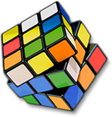
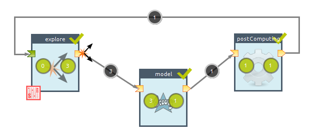
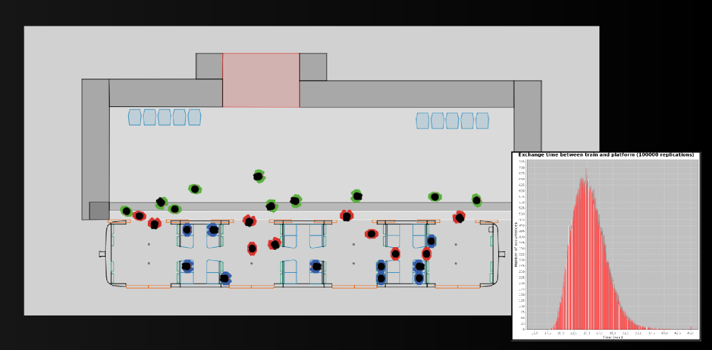

Scientific computing in the cloud
 Scientific computing in the Cloud
Scientific computing in the Cloud
Romain Reuillon, Mathieu Leclaire,
ERC Geodivercity
{romain.reuillon,mathieu.leclaire}@openmole.org
What do modelers do ?
Mapping data to model inputs
(backward problem)

Most of the time the modeling process brings results when coupled with large scale experimentations on models.
Exploration on a space of parameters
What does OpenMOLE do ?
1) it implements
complex-system sampling
algorithms
2) it delegates transparently the computation to massively parallel environments
OpenMOLE proposes a naturally parallel formalism to design experiments on the models

How to design my experiment ?

Embed
your model as a black box : launching command, inputs, outputs
How to design my experiment ?
Describe the way
to explore your space of parameters
How to design my experiment ?

Connect the Tasks and build a
Workflow
How to design my experiment ?

Assign
execution environments to Tasks
How to design my experiment ?
 Run and control
Run and control the workflow execution
It's free and open-source !
Downloads : http://www.openmole.org
Scientific achievements : Chromosome structuring
C++ code
2 days of computation per simulation
1600 simulations
8.5 years of computation on a single machine!
Evaluating chromosome interactions according to their spatial structuration
> Publication Junier et al., CTCF-mediated transcriptional regulation through cell type-specific chromosome organization in the β-globin locus, Nucleic Acids Research, 2012.
Scientific achievements : SimTRAP project

NetLogo code
100000 replications
5 minutes per simulation
1 year of computation on a single machine !
Evalating the mean time of passenger exchange in a subway train
> PhD thesis of J. Figuel, Modélisation et simulation des comportements piétonniers dans les espaces de transport – Application aux échanges quai / train de voyageurs.
Scientific achievements : Simpop project
Scala code
2.5 minutes computation per simulation
Model calibration using a multi-goal genetic algorithm
20 years of computation on a single machine !
Structuration of settlements hierarchy
> Publication Reuillon et al., Algorithmes évolutionnaires sur grille de calcul pour le calibrage de modéles géographiques, proceedings of France Grilles 2012.
> embedd a model written from various programming code
> run complex workflows describing exploration methods on the model
> delegate the computation load on the Cloud
> be centered on the model
> implement automatic method builder answering to the model issues
> enlarge the number and the divercity of the methods